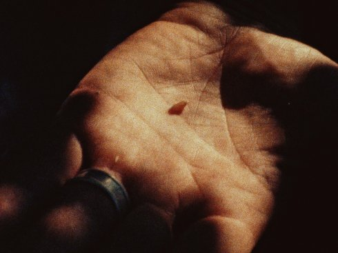

Accession

Tamer Hassan, Armand Yervant Tufenkian
|
48 min – 16mm – English B+P+V: Tamer Hassan, Armand Yervant Tufenkian
|
Tuesday 16 oct 6.30 pm werkstattkino
"Owen called them seed keepers. As we filmed him winnowing chaff from spelt seeds, our thinking started to shift from the conventional moniker 'seed saver.' For something to be saved it must first be declared as lost or at the brink of disappearance. Keeping, on the other hand, implies attending to something that is already present; it suggests an understanding that what one is working with exceeds their knowledge, and continuing to work despite that limit. We came across a small box of letters while visiting a seed company in Virginia, in which each letter accompanied a tiny envelope of seeds. These started our collection. We soon realized the trouble with a collection is that it never reaches completion. Once we started, one letter led to the next without end. We traveled from seed banks to shoeboxes underneath beds, and to the homes from where each letter was sent or received. We began to collect family histories, stories of particular varieties and mundane details of everyday life. Not knowing where the next letter would take us, we filmed at unexpected addresses: a remote cabin in Northern Idaho, Thomas Jefferson’s Virginia plantation. When arranging these materials we wanted to maintain the feeling of the collection, where the viewer would participate in constructing meaning from its parts, however incomplete." (Tamer Hassan & Armand Yervant Tufenkian)
Tamer Hassan & Armand Yervant Tufenkian have collaborated since 2008 and have shown their work in festivals, galleries and cinemas internationally. Tamer studied at the School of the Art Institute of Chicago and currently lives in Chicago. Armand studied philosophy, poetics, and filmmaking at Duke University and lives in Los Angeles where he is completing an MFA at CalArts.
|
| Films Recognitions 2013 – in lightning Agnes 2014 – Inquiries on Community (or, two plus n where n is greater than or equal to one) 2017 – Accession 2018
|